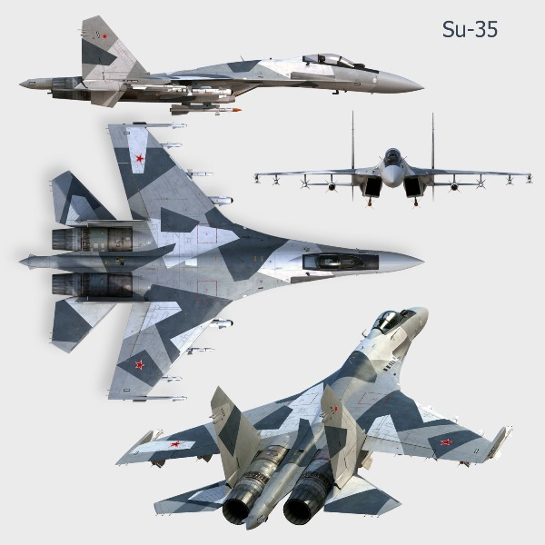
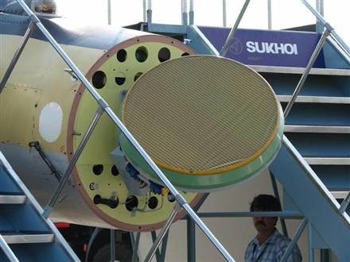

2014-08-15 01:45:00
過去這個月裡最重要的新小道消息是有關中共向俄國購買Su-35的談判。Su-35是Su-27的終極改型版，2010年定型，2011開始在俄國空軍小量服役。俄國在2010年剛定型就詢問中共的興趣，建議中共購買48架两個團，談判於2011年正式展開，到2012年因中共只願意訂購24架一個團並堅決講價而中斷。2012年十二月，習近平出掌中央軍委以後重開談判，雙方各讓一步，俄國同意減少數量，中共則在價銭上寛容，但是中共空軍認為俄國的航電和雷達太過落後（這點我完全同意；請參讀前文《雷達與隱身技術之間的矛盾關係》），堅持要改裝J-16所用的中共設備，所以談判繼續拖延至今。

Su-35的三面圖；其外觀上與Su-27最明顯的不同在於翼展從14.7公尺增加到了15.3公尺
一般西方媒體高度低估共軍技術能力，認為中共該買Su-35以圖引進其Irbis-E型PESA雷達和117S型引擎；而大陸軍迷知道J-16的AESA雷達比Irbis-E强多了，117S也不過是AL-31的加强型，與共軍即將裝備的AL-31的99M2改型性能相當（俄國承襲蘇聯體制，同一型裝備往往有两個獨立的製造厰商，而這些製造商又具有研究發展的能力，所以一種重要的裝備在經過一二十年的改進後，常常分叉為两個系列，117S和99M2就是這様來的），所以一般認為中共只是敷衍一下俄國，顺便拿一些技術情報。我認為西方媒體固然愚蠢，大陸軍迷也没有完全了解Su-35的價值：共軍其實是認真地在談判，之所以談得如此艱難是因為中國的軍工能力已經開始超越俄國，引進俄製武器時只有一些部件比自製品先進，最終會不會真的買成要看雙方的妥協，而俄國人還不完全明白他們的相對劣勢，在談判裡姿態太高。例如如果改裝中製雷達，那麼Tikhomirov就没銭賺了；自蘇聯倒台以來，俄國的軍工產業一直是靠外銷吃飯，中共是二十多年來的頭號客户，Tikhomirov自然不肯放他走。

Irbis-E雷達；雖然PESA具有電子掃瞄能力，在偏離中心軸60°以上的功率損失很大，所以Irbis-E加裝了機械轉向裝置
但是如果Su-35的雷達是爛貨，而引擎可有可無，那麼共軍看上的是什麼呢？這得從共軍内部對Su-27的仿製說起。中共戦鬥機的研究與製造，原本從1950年代起就由瀋飛一家獨霸；到了1990年俄國經濟崩潰，急著外銷軍火賺銭，共軍得以購買新銳的Su-27的時候，雖然已經有了成飛西飛和貴飛等幾家小公司，與俄國“合作生產”任務還是理所當然地交給了瀋飛。瀋飛的官僚氣習很重，人浮於事，六十幾年來還没有開發出任何一種像様的全新飛機款式。1990年代初，瀋飛的主力產品還是J-8，這玩意兒的性能只相當於1960年代美軍的F4或蘇聯的Mig23，而且毛病很多，實用上没什麼價值，在得到Su-27之前中共空軍就不想大量裝備，一旦有了外來的先進戦鬥機，當務之急自然就變成如何學會自製。瀋飛雖然開發不出自己的東西，依様劃葫蘆可是幾十年來的老本行，所以在1996年引進了全套生產線，2000年組裝成功，稱為J-11，到了2006年瀋飛已經能够改裝中共自己的雷達和航電，這就是J-11B。此後中共當然不須要再多買Su-27，俄國媒體老羞成怒，開始指控中共“竊取”Su-27的技術。其實1996年簽的合約本來就包含技術轉移，只是全世界的軍工技術轉移條款都是用來騙買方的，工業製程裡總有很多只可意會不可言傳的秘訣，没想到中共仿製能力獨步全球，還真的把全部的製造技術搞定了。
1990年代末期，中共海軍訂購了Su-27的對海打撃版Su-30MKK。這些雙座飛機在2001年開始交貨。中共海軍對其非常滿意，等J-11可以自製以後，自然要求瀋飛也仿製Su-30MKK。2006年以後，瀋飛只需要俄國的引擎（近年來中共自製的WS-10A“太行”引擎也開始被用在J-11B上，已裝備了幾個旅和團，不過WS-10A一直没有用在單引擎的J-10系列上，其可靠性可能還不到AL-31的水準），所有其他的J-11部件都可以自製，但是瀋飛没有創造力，只知其然而不知其所以然。既然Su-30有現成的様本，還没有太大的困難，這就是J-16。可是當中共海軍需要艦載機時，雖然俄軍的Su-33基本上是Su-27的海軍版，瀋飛却没辦法設計出必要的修改，只好回頭找俄國人。可是俄國自己的Su-33生產線早已不見了，必須重新開發，所需的金銭和時間都不是中共海軍願意接受的。如果只買一两架老飛機，俄國人又不肯。還好烏克蘭有一架Su-33的原型機放在克里米亜的停機坪生鏽，中共只花了點零銭就買到了。瀋飛仍舊是依様劃葫蘆，照抄其機身結構，裝上J-11B的雷達航電，引擎還是俄製的AL-31（俄國人雖不高興，有生意可作還是不會放過的），這就是J-15。
其實瀋飛至今還吃不透Su-27系列機體結構的設計原理，倒也不完全是它的錯。Sukhoi在1980年代設計Su-27的時候，希望其飛行性能能勝過F-15，可是俄製引擎不如美國的，只好在氣動力學上另闢蹊徑，發明出Su-27系列特有的扁平機身加下掛引擎艙外形，其結果是極優異的水平轉向和大攻角操控能力。可是飛機的升力來自两翼，而重量集中在機身，這形成一個很大的力矩，必須由機身的厚度來抵抗。Su-27是一架很大的飛機（F-15的翼展只有13.05公尺！），其前所未有的扁平機身因此對其機體結構强度造成極大的挑戦。而且既然引擎不如美國的，機體就必須是越輕越好，不能一味靠加粗框架來加强結構强度。當時西方實施很嚴格的高科技禁運，蘇聯根本買不到像様的電腦，也就不可能用電腦輔助設計（CAD，Computer Aided Design）來精確算出最佳方案，所以Sukhoi的設計師們只好反覆做了大量的實験，在黑暗中摸索出了一個折衷的結果。瀋飛只買到了這個結果，看不到那成千上萬的實験抉擇，自然没辦法舉一反三了。
可是Su-27的原方案並不成功，在1990年代，有好幾件空中解體的事故，後來只好把最大可用過載從9g下降到7.5g。這對一款和F-15針鋒相對的空優戦機來說，實在是個很嚴重的問题（雖然F-15的水平轉向能力也只平平，最大可用過載只有7.3g，但靠着强大的引擎，垂直機動能力遠勝俄系戦機；而且同一代的F-16水平轉向能力極佳，最大可用過載是貨真價實的9g）。Sukhoi和它的两個生產夥伴在設計後續機種的時候，一直試圖在不增加重量的前提下加强機體的横向强度。Su-30和Su-33代表著两種不同的第二代設計，但是它們仍然没有拉9g的能力。一直到了Su-35這一代，靠了先進的鈦合金材料和現代的電腦輔助設計才終於解決了這個問题。不但如此，翼展還可以進一步加長來使飛機更加靈活。瀋飛既然没有能力獨立開發出第二代的機身，當然也没有能力自行做出Su-35極為優異的第三代方案。而且雖然瀋飛在J-10和J-20的两代自主戦機上都敗給了成飛，但它仍舊是中國最大的戦鬥機厰商，有三萬多名職工；相對的，成飛的職工數和年產量都只有它的一半。不幸的是瀋飛的J-8早已停產了；031方案（西方媒體誤稱為J-31）性能落後，前途渺茫；J-11，J-15和J-16都有機身强度不足的毛病，共軍的訂單很有限。而中共海空軍還維持着200架J-8和1000架J-7，必須趕緊替換；現今習近平積極建軍，買新機替換的經費是有了，可是J-10和J-20的產能是不够的，共軍也不希望瀋飛就此完蛋。一個皆大歡喜的解決辦法就是改掉Su-27系列機身强度不足的毛病，那麼瀋飛的產能就可以用在生產J-11，J-15和J-16上面，及時替換掉極為落伍的J-7和J-8。而引進Su-35恰是這個解決辦法的關鍵所在。
剛好美國操弄烏克蘭政變，以致和普丁撕破臉，俄國全面倒向中共，雙方都有了妥協的動機。尤其在MH17被撃落後，美國逼著歐洲對俄國實施軍事禁運，俄方的雷達和航電元件不能再從歐洲進口，只能改向中共購買，更加没理由拒絶採用中製的雷達和航電，所以近幾天傳出來的消息是俄方同意這點。我認為這是一個合則两利的交易，應該很快就會達成協議了。